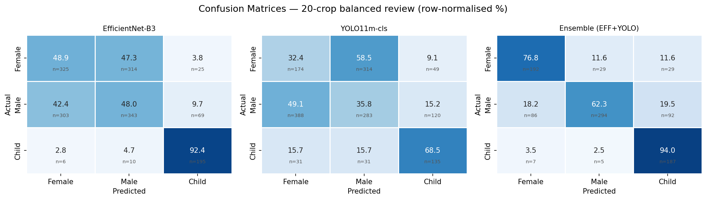
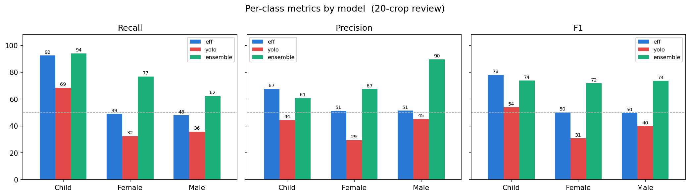
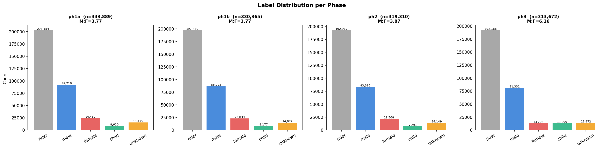
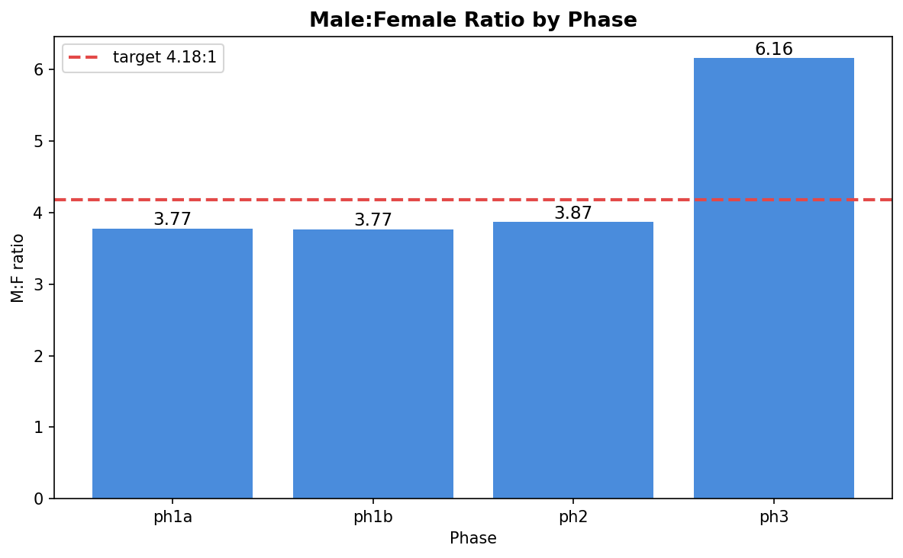
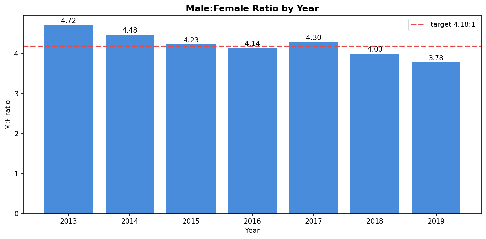
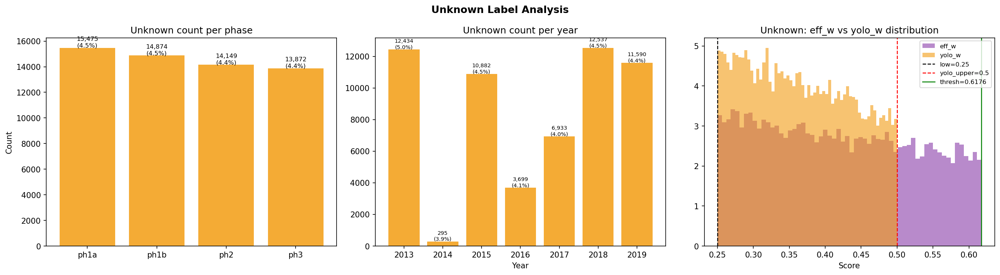
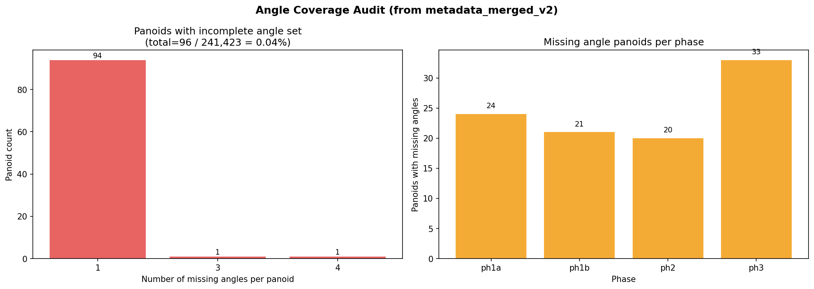
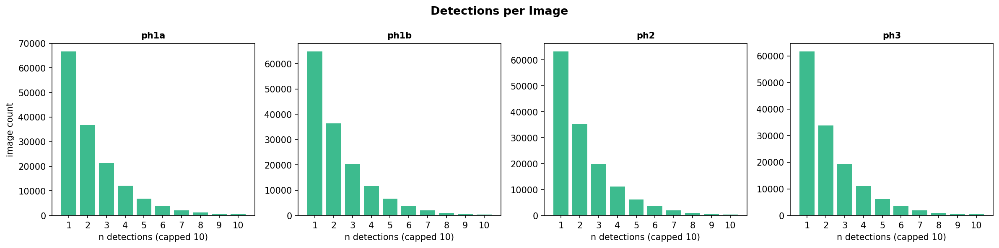
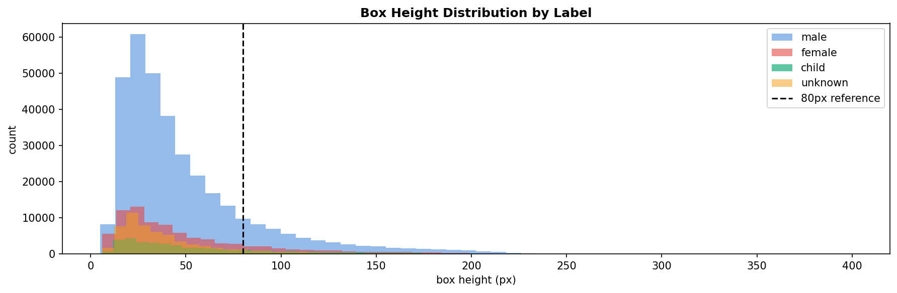

Pedestrian
Gender
1,307,236 pedestrian detections, gated down to 521,519 non-rider crops, classified into female / male / child by an EfficientNet-B3 + YOLOv11M ensemble — the inputs behind GPI.
Why an ensemble
On a balanced 20-crop-per-class manual review, neither model alone is close to reliable on its own for distinguishing female from male: EfficientNet-B3 misreads female crops as male 47.3% of the time, and male crops as female 42.4% of the time — not far off a coin flip. YOLO11m-cls is worse on the same axis (58.5% and 49.1%). Both models are individually much stronger on the child class (92.4% and 68.5% correctly classified).
Averaging the two models' outputs rather than picking one resolves most of this: ensemble accuracy climbs to 76.8% for female, 62.3% for male, and 94.0% for child — the single biggest lever in the whole pipeline for pedestrian classification quality.


Detections and label distribution
Riders — people on motorbikes or bicycles, filtered by the Stage 1 gate before gender classification — make up 60.1% of all 1,307,236 detections. Of the 521,519 crops that pass through to Stage 2, the pooled split is 65.9% male, 15.8% female, 7.1% child, and 11.2% unknown, giving a pooled male:female ratio of 4.18:1 — the reference line plotted against each individual phase below.



The unknown class
Unknown sits at a steady 4.4–4.5% of detections in every phase and every year — the clearest sign that it reflects genuine classifier uncertainty rather than a phase-specific or temporal artifact. It isn't a trained fourth class: it's assigned post-hoc from a compound rule over both models' femininity scores, visualised below as three reference lines — a low-confidence floor around 0.25, an upper bound on the YOLO branch around 0.5, and a combined threshold near 0.62. These cutoffs are reverse-engineered from the score distributions rather than read from source, so treat the exact values as provisional. This is the same signal that feeds SUI on the methods page: rather than discard uncertain detections, they're counted and reported.

Data completeness
Two structural checks, both clean. Heading coverage: only 96 of 241,423 panoids (0.04%) are missing one or more of the six headings, concentrated slightly more in Phase 3 (33 panoids) than elsewhere. Detection density follows the expected shape in every phase — most images contain one or two pedestrians, tailing off sharply beyond that, with no phase behaving differently from the others.


Bounding-box heights also separate by predicted class: male detections span a notably wider and taller range than female, child, or unknown, which cluster at smaller box heights. This is worth keeping in mind alongside the confusion-matrix results above — crop size is a plausible contributor to classification difficulty, not just image content.
